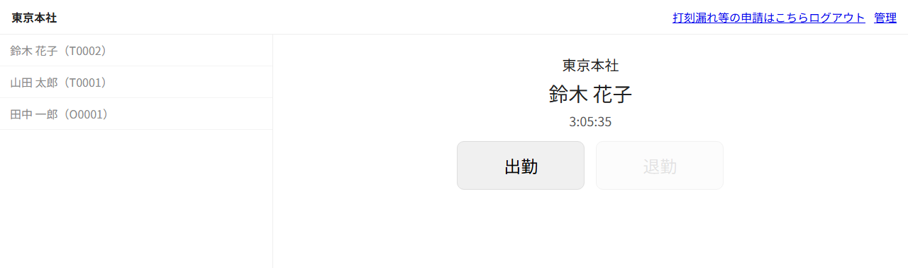
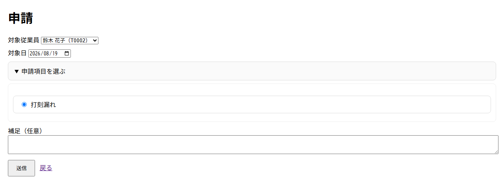
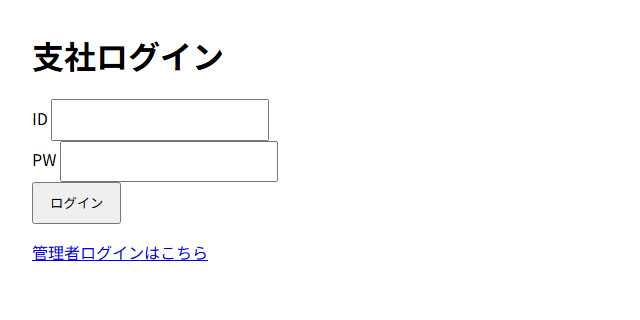

PHP：勤怠打刻Webアプリ（プロト）
支社ごとのアカウントで共有端末にログインし、従業員が一覧から自分を選んで出退勤を記録するWebアプリです。
開発の背景
当時経理として務めていた会社の代表から「打刻アプリに通知機能を付けたい・維持費が高い」という相談を受け、開発を始めました。
現行アプリの開発元へ相談した所、主要な部分が抜き取られたソースコードをいただき、1ヶ月かけて起動に成功するも、正常に動作しない状態でした。
拡張機能を追加することも難しいと判断し、同じフレームワークのCodeIgniter 4で開発を始めました。
主な機能
- アカウント権限 — 管理者＝全支店の閲覧・編集権限、支店管理者＝所属支店の閲覧・編集権限、従業員＝打刻・打刻漏れ等の報告
- 月次タイムシート — 支社を選択して月間の勤怠状況が確認できます。バッジで「欠勤・遅刻・早退のマーク、報告」を表示し、視覚的に分かりやすい画面をイメージして作成しました。
- 打刻履歴と編集 — 期間・支社・氏名やカナ・社員番号の部分一致で打刻を検索し、行ごとに時刻を修正できます。修正履歴として「変更前後の時刻・編集した人・理由」を監査ログに残る設計にしました。
技術スタック
バックエンドはCodeIgniter 4.6、PHP 8.2、開発環境はXAMPPで、データベースはMariaDB（MySQLiドライバ・utf8mb4）を使用しました。 画面は素のHTMLとJavaScriptで、JSONを返すAPIをfetchで呼び出して組み立てます。
ログインはセッションと、bcryptによるパスワードのハッシュ化・照合で行い、打刻・管理画面はそれぞれ別のフィルタで保護しています。DBは支社・従業員・打刻・申請・確認状態・監査ログなど9つのテーブルで構成しています。
規模はアプリ本体のPHPが約7,100行、ChatGPT生成のコードがコントローラ・モデル・フィルタで約990行、画面のテンプレートが約1,470行です。
現状の課題：一時期お名前.comのレンタルサーバーへアップしていたことによりフォルダ構成を変更したままだったため、ローカル上で正しく表示することができていません。せっかくなのでClaude Codeで全体を読み取ってもらいながら自分で修正していこうと思っています。
画面（現在ローカルで表示可能な3枚のみ）
-

打刻の画面。左の一覧から従業員を選ぶと、右に名前と現在時刻が出ます。退勤していない打刻が残っていない状態なので、出勤だけが押せます。 -

打刻漏れの申請。対象の従業員と日付、申請の種別、補足を選んで送ると、未処理の状態で登録されます。 -

支社のログイン。打刻用の入り口で、管理者は下のリンクから別のログイン画面へ進みます。
画面はすべて架空のデモデータです。
制作実績へ戻る